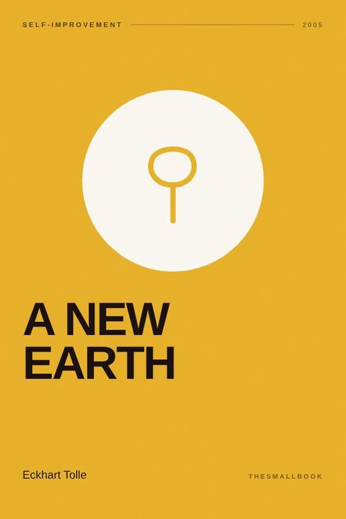
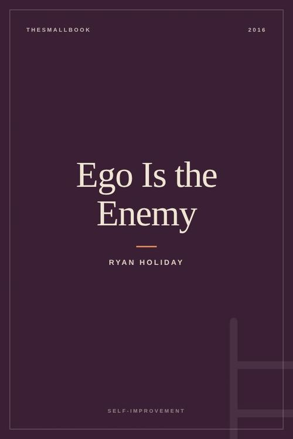

Library › Ask the Library › How do I stop being so ego-driven?
How do I stop being so ego-driven?
The short answer
The ego is a fiction you defend, it needs to be right, special and in control. Watch it without believing it: catch the complaint, drop the need to win, and let presence replace performance.
The books behind the answer

A New Earth
Eckhart Tolle · 2005 · 8 min · 6 lessons
Your ego is a fiction you defend. See it, step out of it, and your real purpose - presence - appears.
- The Ego: The Fiction You Defend: The ego survives by comparing and being right. Watch it, and you step into who you really are.
- Complaining: The Ego's Favorite Food: Every complaint says 'reality should be different'. Try a no-complaint hour, the ego loses its meal.
- Letting Go of the Need to Be Right: Ask: do I want to be right, or do I want peace? Often the answer reveals the ego.

Ego Is the Enemy
Ryan Holiday · 2016 · 8 min · 6 lessons
At every career stage - aspiring, succeeding, failing - ego is the invisible saboteur. Humility, purpose, and the work are the antidotes.
- Aspire: Talk Less, Be a Student, Beware Passion: Ego speaks to look good; wisdom speaks to add value. When in doubt, ask a question.
A failure that proves it
Why did Adam Neumann fail?
2019 · EGO · Loss: $47B → $8B in six weeks
WeWork's founder built a $47B valuation on ego, and lost control in weeks. Ego inflates the balloon; reality pops it.
Charisma is a multiplier on the underlying business - and the underlying business was renting desks. When the founder's mystique IS the moat, the IPO prospectus is the exorcism.
Questions people ask next
Can I read this in Hindi?
Yes. This answer is written in simple English. Open any linked book and choose Hindi or Hinglish to read the full lessons in your language, with audio where available.